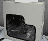

|
|
| 当前位置：电脑报电子版 > 1999 年 > 47 期 > 硬件周刊 > 群星耀赌城 |
| 《 群星耀赌城 》 |
| COMDEX（COMputer Distributor EXph，计算机分销商展览）是全球为之关注的计算机产品的博览会，它主要展示电脑最新的硬件、软件、外围设备、网络产品和最新的技术。COMDEX Fall’99是本世纪最后一次具有深远意义的IT产品盛会，1999年月11月15日至19日在美国著名的赌城拉斯维加斯举行。本次大会围绕四个快速增长的主题展开：电子商务、信息工具、宽带网络和平台，它们组成了此次COMDEX展览的整体。COMDEX已不再局限于计算机相关的范畴，它已经渗透到IT产业的各个方面，也让人们有机会在同一地点、同一时间走近所有的新技术，这些技术很可能在新的世纪里产生长远的影响。现在我们就来领略COMDEX上采用最新技术的计算机及相关产品的“群星”荟萃。
迈向1GHz的处理器 AMD  AMD公司和一家名为Kryotech的低温技术公司联合展示了主频为1GHz的Athlon处理器的电脑系统，这套系统采用Kyrotech的成熟冷却技术，整套系统完全具有实用价值，目前的售价为2500美元。12月份AMD公司还将推出750MHz的Athlon，最终的目标是在明年初达到1GHz的速度。据悉，AMD在下一代台式微处理器——“Mustang”中，将采用性能更为强劲的内核，其64位微处理器——“Sledgehammer”，也预计将在2001年问世。此外AMD还公布了将在明年上半年推出新的笔记本型电脑所使用的K6－2＋处理器，它将具有运行时能降低电池电力消耗的Gemini技术。这种技术与英特尔Speedstep技术相同，但Gemini技术根本目的是大幅提升电池寿命。 英特尔 在COMDEX上英特尔虽然没有发布处理器产品，但或多或少地透露了下一代CPU进展，采用Coppermine核心的PentiumⅢ处理器在明年一月升级到800MHz，年中的时候将达到1GHz的运行速度。2000年第一季度Intel将发布下一代处理器IA－32，其起始主频可能达到1G ～1.2GHz。而第一款64位的IA－64（Merced）计划在年中发布，但起始主频还未确定。11月15日，英特尔还正式对外发布i820芯片组，这是第一款支持高性能的Direct RDRAM内存的技术的台式机主板芯片组。在COMDEX Fall上各大主板厂商同步推出基于i820芯片组的主板，虽然Intel声称RDRAM在内存数据传输方面的性能是目前PC100 SDRAM的两倍，但由于第三条RIMM设计上的原因，此次发布的主板都只采用两条RIMM槽加上两条DIMM槽的组合。 威盛 威盛电子开始使用VIA Cyrix的名称，其瞩目的Joshua处理器也正式亮相。Joshua使用Socket 370架构，支持133MHz外频，可兼容现有赛扬处理器的主板，并有望在明年一季度投放市场。除了Socket 370处理器外，威盛还展出了433MHz的MⅡ处理器。同时威盛公司还展示了支持Athlonth处理器的芯片组——SlotA架构的第二代Apollo KX133，这也是威盛电子回击i820芯片的有力武器，它支持AGP4×以及PC133内存等，预计明年1月或2月就会有采用此芯片组的主板问世。 技术至上的更新换代 3DFX 3dfx代号为“Napalm”的新一代显示芯片正式在COMDEX亮相，它采用最新VSA技术的VSA－100显示引擎，最大填充率可超过10亿像素/秒，可支持多达32颗芯片、4× AGP，贴图材质的分辨率达2048×2048，以VSA－100为核心开发的Voodoo 4、Voodoo 5显示卡，在卡上配备1～4颗VSA－100芯片，支持从16MB到128MB的显存。由于VSA延伸架构支持最多32颗芯片，3dfx也将以此打入高档显示市场。计划明年3月上市的Voodoo4和Voodoo5显示卡都将有AGP和PCI两种版本。IBM IBM展示了目前解析度最高的平面直角液晶显示器，希望藉此成为其他制造商新技术的提供者。这款20.8英寸的显示器分辨率可达2048×1536，显示的图像将比任何其他显示器更加清晰。IBM认为随着显示器分辨率的提高，LCD必定会取代CRT显示器。松下 松下公司推出数码相机 ParmCam PV－SD4090，该相机内置130万像素的CCD，使用容量为120MB的 SuperDisk 软盘作为记录媒体，可记录的超精细图像约为450幅，目前售价为899美元，预计在2000年春季在日本上市。Maxoptics、三菱化学、旭光学、Lafe Group 设计开发光磁盘的美国Maxoptics、日本的三菱化学、旭光学以及香港的Lafe Group等四家公司推出记录容量为40GB的光磁盘OSD（Optical Super Desity)。SCSI接口的OSD光盘驱动器的数据传输速度为30MB/s，平均寻道时间20ms。该设备和光磁盘预计2000年第四季度可以出厂，价格尚未确定。新概念电脑趋势 英特尔 继去年“概念电脑”后，英特尔今年推出了“21世纪概念个人电脑”。这些最新型号概念电脑中的Fiori's Attivo，是采用奔腾Ⅲ处理器的娱乐产品，配置了ADSL（非对称数字用户线）、支持4×AGP、Rambus 内存和兼容DVI（交互式数字视频系统）的平板显示器。这批概念电脑沿袭了苹果电脑的外观设计理念，色彩斑斓、活泼轻快，令人爱不释手。这种全新的设计理念不仅适用于家用电脑，也同样适用于针对其它任何用户的电脑产品。AMD AMD展示了采用K6－2微处理器的新潮概念电脑。这款名为“EasyNow”的电脑外观呈椭圆形，具有彩色的透明外壳，取消诸如内置磁盘驱动器的传统电脑设计，电源采用外接设计，而其他部件多采用独特的集成方式，售价预计将在499美元到699美元之间。AMD表示后续产品中，还将设计采用Athlon微处理器的EasyNow电脑。联想 联想公司发布了称为“Conet”的互联网电脑，这是中国大陆信息产品第一次在海内外同时举行大型产品发布，标志着联想作为中国信息产业的代表已经为其在国际同行中树立自己的品牌和形象迈出了第一步。 联想Conet电脑的设计非常出色，很适合消费者，便于消费者使用，它把电脑和互联网服务汇集于一体，为消费者提供了全面的解决方案。宏綦 宏綦电脑展示了被谈论多时的专用电脑XC，预计明年第一季有四款机种批量生产出货。这些XC产品包括已经小量出货的视频接收器、以及结合DVD播放与上网功能的附加插件。XC将全部采用微软WinCE操作系统，预计最快明年第一季批量生产出货。卡西欧 卡西欧公司发布新款名为“Cassiopeia”的Fiva系列手持电脑，它可以运行Windows98，而不是像其它手持电脑一样只能运行Windows CE。其中一款Fiva还配置了64兆内存，6GB硬盘和主频233MHz处理器。Cassiopeia电脑预计明年上半年上市销售，售价1799美元。ViA Ⅱ ViAⅡ可穿戴式电脑实际上是一种可以系在腰上的笔记本电脑，它拥有3.2GB硬盘和 64MB内存，使用语音识别技术代替键盘，并和头戴式显示器一起工作。ViA Ⅱ可穿戴式电脑并非一种原型产品，而是一种面向移动工作者的真正移动解决方案，它投放消费市场的时间估计距离现在不会太久。售价在3000美元～5000美元之间。时尚与家电纷至沓来 索尼 索尼公司最新数字随身听产品“Memory Stick Walkman”和“Bio Music Clip”都使用半导体储存器，“Bio music clip”只有一个打火机大小，内部安装了64MB的Flash EEPROM，不仅可以播放索尼公司开发的 ATRAC3 规格的音乐，还可以播放MP3音乐。Memory Stick Walkman只能播放 ATRAC3 规格的音乐，其它规格则必须先通过微机转换成ATRAC3形式。Bio music clip 将于2000年1月投放市场，预定售价为299美元，Memory Stick Walkman为399美元。三星 韩国三星电子公司展出的手表型手机，对应CDMA1900方式，主要面向美国市场，具体投产日期尚未明确。这款手表手机配置了128×64点阵的黑白液晶显示器，具备了日历和钟表功能，也可以显示电话号码，它的声音识别功能可以通过声音输入电话号码。三星还推出了配有2英寸反射型彩色液晶显示屏的MP3随身听“PhotoYepp”，它的显示屏像素数为280×220点阵，记录媒体为SmartMedia，可采用USB接口与计算机连接。这款MP3计划2000年1月投产，售价为399美元。据悉，三星还准备利用MPEG4处理影像数据。 诺基亚 诺基亚7100系列移动电话拥有令人喜爱的大显示屏，还可以非常方便地接入互联网，它可以使用兼容无线应用协议的浏览器在互联网上冲浪。这种移动电话还拥有一个内置的词典，可以猜出你通过小按键输入的词汇。诺基亚7100系列移动电话预计将在12月初投放市场。估计售价为500美元。Acer Peripheral s、LG Acer Peripheral s公司展出的42英寸的PDP（等离子体显示器）电视接收机，计划于2000年6月或7月份投放市场，这将成为该公司的首批PDP产品。PDP电视机的像素为800×600点阵，屏幕纵横比为4∶3，标准状态下的耗电为400W，面市时将把耗电降到300W左右。 同时韩国LG电子公司也展出了60英寸的PDP电视接收机样机，它的显示像素为1365×768点阵，耗电为1KW左右，面市时间未定。本届COMDEX展出的各种新技术和新产品当然远不止上面提及的这些，随着Internet的发展和信息家电技术与电脑的融合，各自产品之间的差异已越来越小，网络与硬件产品技术的结合也越来越紧密，让我们深切感受新技术和新产品带来的巨大魅力。虽然盛会的大幕早已落下，但COMDEX Fall ’99带来的震撼必将影响到新世纪IT业的发展。 （云中熊） |
| 下载本期推荐软件 | 页 首 |
| 《电脑报》版权所有，电脑报网站编辑部设计制作发布 |